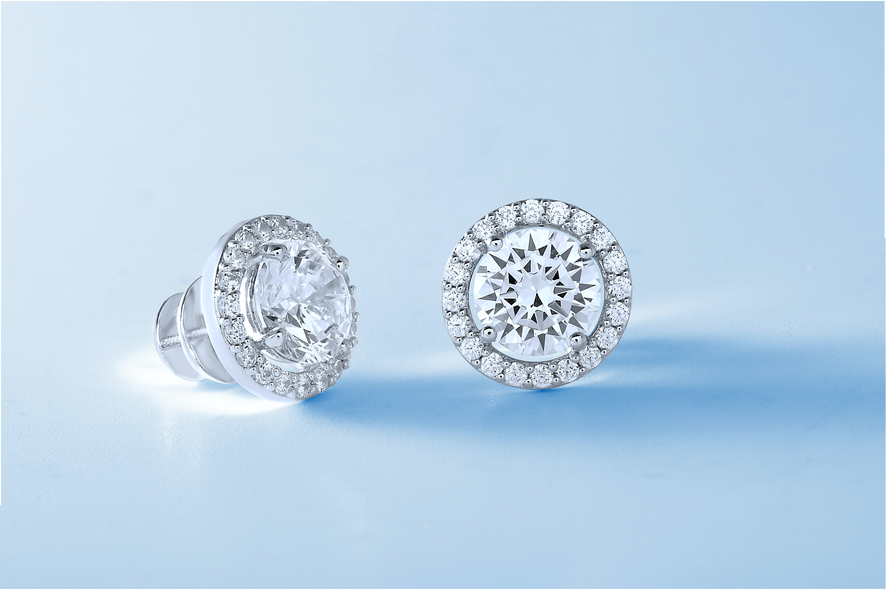

SIGUENOS
Joyas Disponibles

Anillo de Matrimonio

Anillo con Diamante

Arete con Diamante

Pulser Diamantada
Pulsera en bronce

Anillo con bordes de Diamante

Aretes con brillo

Anillo de Oro
Historia de Joyeria